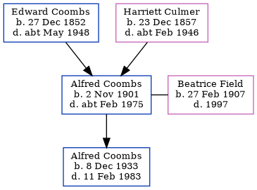

Alfred William Constable Coombs 1901 - c1975
[ Home ] | [ Calendar ] | [ Surnames Index ] | [ Errors ] | [ Family History ]A lorry driver and shepherd neame brewery drayman for the shire horses and the child of Edward Coombs (an agricultural labourer) and Harriett Culmer, Alfred Coombs, the second cousin twice-removed on the mother's side of Nigel Horne, was born in Hernhill, Kent, England on 2 Nov 19011,2, was baptised there at St Michael on 22 Dec 1901 and married Beatrice Field (with whom he had 1 child, Alfred William Charles) in Thanet, Kent, England around Aug 19293.
During his life, he was living on Crockham Lane in Hernhill on 2 Apr 19114; and at 60 Makenade Avenue, Faversham, Kent on 29 Sept 1939 - less than a mile from his brother Sidney John who was living at 11 Napleton Road, Faversham, Kent.
He died c. Feb 1975 in Canterbury, Kent, England2.
Parents
- Edward was born on 27 Dec 1852
- Harriett was born on 23 Dec 1857
Children
- Alfred William Charles was born on 8 Dec 1933
Citations
- England & Wales births 1837-2006 - Findmypast
- England & Wales deaths 1837-2007 - Findmypast
- England & Wales Marriages 1837-2005 - Findmypast
- 1911 Census for England & Wales - Findmypast (was age 9 and the son of the head of the household)
Notes
He was an ace shot and Kent County Rifle Champion a few times.
Media
1911 UK Census

1911 Census for England & Wales - GBC/1911/RG14/04382/0003/7
England & Wales births 1837-2006 - BMD/B/1901/4/AZ/000124/089
England & Wales deaths 1837-2007 - BMD/D/1975/1/AZ/000235/094
Canterbury Baptisms Transcription - GBPRS-CANT-B-96335080
England, Births & Baptisms 1538-1975 Transcription - R_884306444
England, Births & Baptisms 1538-1975 Transcription - R_884943713
1939 Register Transcription - TNA-R39-1716-1716D-022-12
England & Wales marriages 1837-2005 - BMD/M/1929/3/AZ/000285/092
Family Tree
Map
Generated by ged2site. Last updated on Jul 3, 2024
Known Issues
Residence record for 29 Sep 1939 contains no citation
Listed in the residence for 29 Sep 1939, but spouse Beatrice Field is not